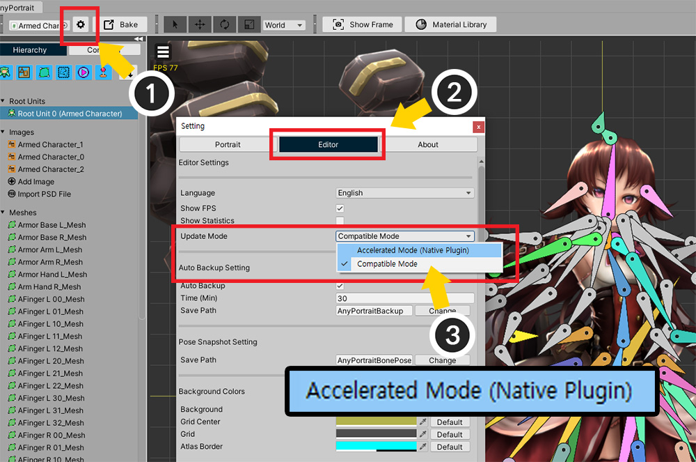
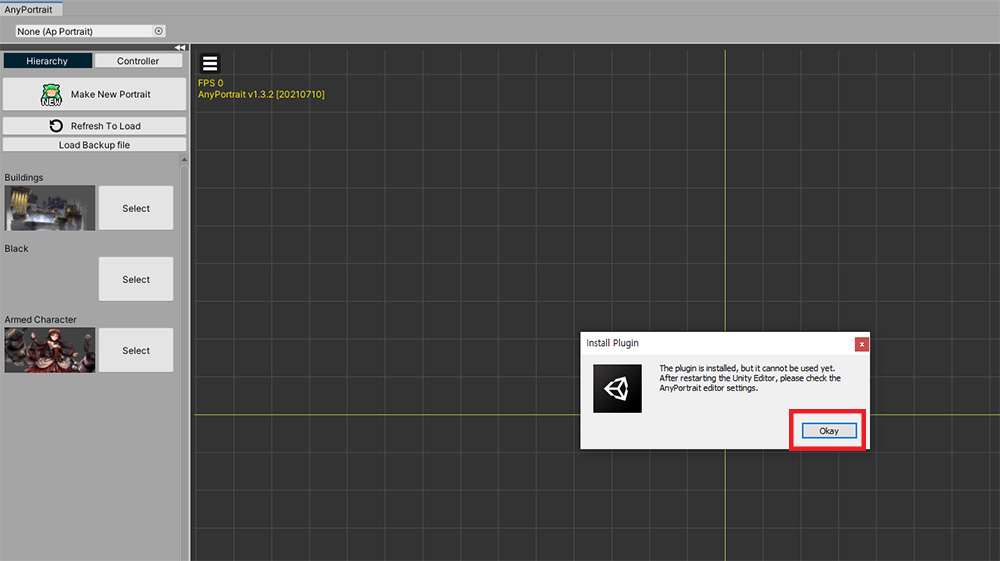
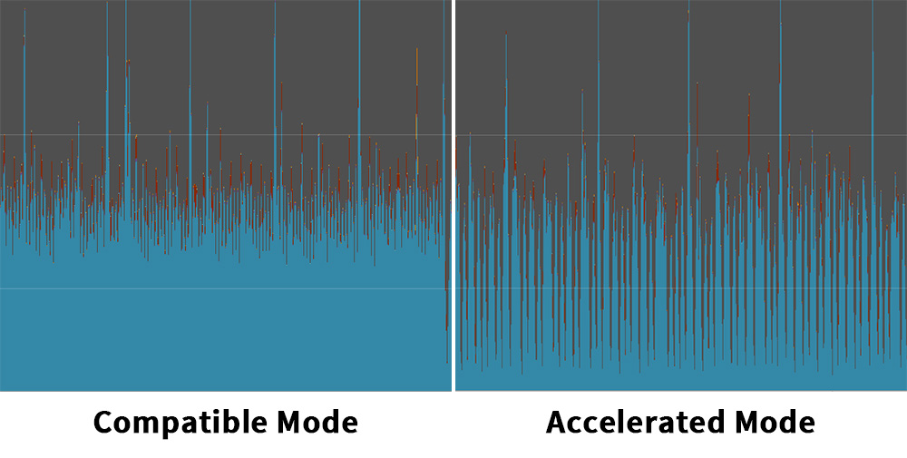
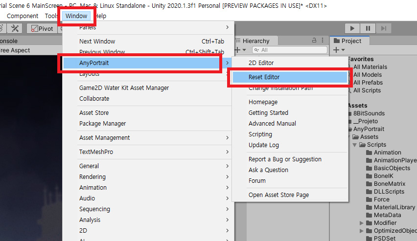

AnyPortrait > 메뉴얼 > 가속 모드
가속 모드
1.3.2
유니티의 확장 에셋이라는 제약을 극복하고 AnyPortrait 에디터의 성능을 높이기 위해 저희 팀은 다양한 방법을 시도하고 있습니다.
이 페이지에서 소개하는 가속 모드(Accelerated Mode)는 그 노력의 일환으로 개발된 것입니다.
주의
가속 모드는 실험적인 기능이며, 실행 환경에 따라서는 동작하지 않을 수도 있습니다.
또한 유니티 에디터 버전이나 실행 환경에 따라서는 성능이 크게 개선되지 않을 수도 있습니다.
저희 팀에게 피드백을 주시면 계속해서 개선하겠습니다.
가속 모드는 현재 64비트 환경의 Windows와 Mac OS만 지원합니다.
가속 모드 플러그인 설치하기
가속 모드는 유니티의 네이티브 플러그인(Native Plugin)을 이용하여 개발되었습니다.
유니티 엔진 특성상 다소 복잡한 설치 단계를 거쳐야 합니다.
아래의 설명을 주의깊게 보시기를 바랍니다.

(1) AnyPortrait 에디터의 설정 다이얼로그를 엽니다.
(2) Editor 탭을 누르면 Update Mode 항목이 추가된 것을 볼 수 있습니다.
(3) 에디터의 업데이트 방식을 호환 모드(Compatible Mode)와 가속 모드(Accelerated Mode) 중에서 선택할 수 있습니다.
기본적으로는 호환 모드가 선택되어 있을 것입니다.
가속 모드(Accelerated Mode)를 선택해봅시다.

가속 모드로 변경하면 위와 같은 경고 메시지와 함께 설치 버튼이 나타납니다.
가속 모드를 지원하는 별도의 플러그인이 설치되지 않는다면 가속 모드가 동작하지 않기 때문입니다.
(1) Install Plugin 버튼을 누릅니다.
(2) 플러그인이 바로 설치되지 않고 유니티 에디터를 먼저 재시작해야한다는 메시지가 나타납니다. Okay 버튼을 누릅니다.

유니티 에디터를 재시작하고 AnyPortrait 에디터를 엽니다.

AnyPortrait 에디터가 열리기 전에 가속 모드 플러그인이 설치될 지 여부를 묻는 다이얼로그가 나타납니다.
Install Now를 눌러서 플러그인을 설치합니다.

플러그인이 설치되면 AnyPortrait 에디터가 열리면서 설치 결과 메시지가 나타납니다.
다만, 네이티브 플러그인 특성상, 설치 이후에 아래와 같은 다양한 상황이 발생할 수 있습니다.
- 설치가 성공되어 바로 가속 모드가 동작합니다.
- 설치는 성공되었으나 네이티브 플러그인이 추가적으로 동작할 수 없는 상태입니다. 유니티 에디터를 재시작해야합니다.
- 설치에 실패하였으며 가속 모드 플러그인이 지원되지 않는 환경입니다.
위의 이미지의 경우는 설치가 성공되었으나 유니티 에디터를 다시 시작해야하는 상황입니다.
유니티 에디터를 재시작하고 다시 AnyPortait 에디터를 열어봅시다.

AnyPortrait 에디터의 설정 다이얼로그의 Editor 탭을 엽니다.
만약 플러그인이 성공적으로 설치가 되었다면 가속 모드가 활성화된 것을 볼 수 있습니다.

가속 모드에서는 UI를 제외한 애니메이션이나 모디파이어의 처리 성능이 개선됩니다.
위의 경우 에디터의 최소 FPS가 호환 모드에 비해 크게 줄어든 것을 볼 수 있습니다.
다만, 유니티 에디터 버전이나 사용자 환경에 따라선 다른 결과가 나타날 수 있습니다.
호환 모드나 가속 모드를 모두 사용해보시고 자신에게 맞는 업데이트 모드를 선택하시면 되겠습니다.
가속 모드에 문제가 발생한 경우
가속 모드에 문제가 발생하면, 다시 호환 모드로 변경해야 합니다.
문제가 발생했을 경우 AnyPortrait 에디터를 열지 않고 바로 호환 모드로 변경하는 방법을 이용해보세요.

위와 같이 가속 모드 플러그인(DLL)이 Assets/AnyPortrait/Editor/DLL 폴더에 설치된 것을 볼 수 있습니다.
가속 모드를 비활성화하기 위해 이 DLL 파일을 삭제해도 되지만, 만약 이 플러그인이 한번이라도 로드가 된다면 삭제가 불가능합니다.
따라서 아래와 같이, 먼저 호환 모드로 변경한 후 DLL 파일을 삭제할 것을 권장합니다.

유니티 에디터에서 Window > AnyPortrait > Reset Editor 항목을 눌러서 실행합니다.
이 항목을 클릭하면 AnyPortrait 에디터를 메모리상에서 초기화하며, 동시에 강제로 업데이트 모드를 호환 모드로 설정합니다.

설정 다이얼로그에서 호환 모드로 변경된 것을 볼 수 있습니다.
이후에 문제가 되는 DLL 파일을 삭제하면 되겠습니다.
(유니티 에디터를 다시 실행해야할 필요가 있을 수 있습니다.)